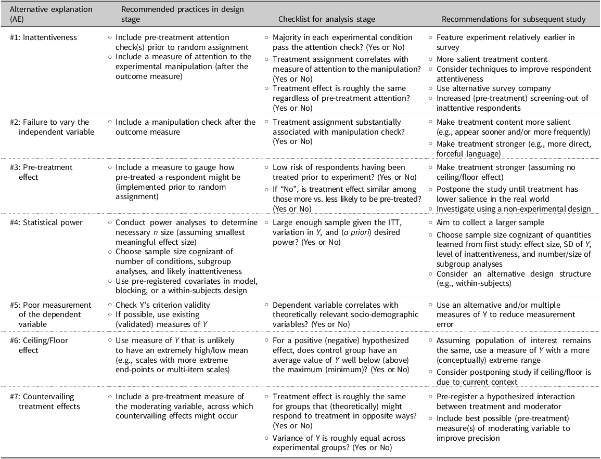

Kane (2025) as a Power Paper
Re-Interpreting Kane’s (2025) Paper on Null Results as a Paper on Statistical Power
It’s helpful to think of statistical power as determined by the ratio \(\frac{\tau}{SE}\), where \(\tau\) is the treatment effect and SE is the standard error of the estimate.1
I like this ratio because it makes two distinct tasks clear:
- create a treatment with some oomph and
- estimate it precisely.
While pitched as a paper on null result, Kane (2025) offers a very helpful (and thorough!) list of ideas to increase statistical power.
Power as a Ratio
For a “well-powered experiment,” the task is to get the ratio \(\frac{\tau}{SE}\) above at least 2.5 (for 80% power) and ideally to 3.3 (for 95% power).2
2 Remember that “well-powered” isn’t a given. Most political science research is “greatly underpowered” (Arel-Bundock et al. 2022).
Here’s the idea:
Power equals \(1 - \Phi_{std}\left( 1.64 - \frac{\tau}{SE} \right)\), where \(\Phi_{std}(z)\) is the standard normal CDF (as found in a standard \(z\) table), \(SE\) is the standard error of the estimated treatment effect, and \(\tau\) is the treatment effect.
This rule allows us to connect statistical power to the familiar \(z\) table in the appendices of many statistics textbooks or the
pnorm()function in R. But, more importantly, it drives home an important intuition—power is determined by the key ratio \(\frac{\tau}{SE}\). To estimate power, we must make an informed assumption about the effect of interest and a good prediction of standard error of the estimate. Further, when we consider changes to the experimental design and the consequences for statistical power, it can be helpful to think about the numerator or the denominator of the key ratio \(\frac{\tau}{SE}\): How do you make the effect as large as possible? And how do you make the estimate as precise as possible?
- Make the effect as large as possible.
- Make the estimate as precise as possible.
Kane’s List, and Relevance to the Ratio
Kane (2025) offers an excellent list of options to either increase the treatment effect or shrink the standard error.
He pitches the list as a way to make a compelling case for null results. However, the list is also helpful for making sure that we’ve thought through the ways to maximize power. It’s a wonderful paper well worth a careful read for folks who run experiments or read experimental work.
I’m going to borrow his list and connect the action items to statistical power.
Kane arranges his list into seven “alternative explanations” for null results, which we might think of as “potential power leakages.” I recreated a version of Kane’s table (Table 1 in his paper) that contains each action item to consider. I’ve kept Kane’s labeling for the various categories, but taken some liberties in collapsing some of the action items.3
3 He breaks his suggestions into to columns for the current study and future studies. For my purposes, these can be collapsed.
The table below lists all of Kane’s categories and action items and notes the pathway through which this stop might increase statistical power. While Kane doesn’t explicitly pitch the list as “ways to increase” power, we can certainly borrow it for that purpose.
| Kane’s Categories | Action Item | Pathway to Increase Power |
|---|---|---|
| #1: Inattentiveness | Include a measure of attention to the experimental manipulation (after the outcome measure) | NA |
| Feature experiment relatively earlier in survey | Increase treatment effect. | |
| More salient treatment content | Increase treatment effect. | |
| Consider techniques to improve respondent attentiveness | Increase treatment effect. | |
| Use alternative survey company | Increase treatment effect; see Stagnaro et al. (2024) for more. | |
| Increased (pre-treatment) screening-out of inattentive respondents | Increase treatment effect, though a smaller sample size will increase the standard error. | |
| #2: Failure to vary the independent variable | Include a manipulation check after the outcome measure | NA |
| Make treatment content more salient (e.g., appear sooner and/or more frequently) | Increase treatment effect. | |
| Make treatment stronger (e.g., more direct, forceful language) | Increase treatment effect. | |
| #3: Pre-treatment effect | Include a measure to gauge how pre-treated a respondent might be (implemented prior to random assignment) | NA |
| Make treatment stronger (assuming no ceiling/floor effect) | Increase treatment effect. | |
| Postpone the study until treatment has lower salience in the real world | Increase treatment effect. | |
| Investigate using a non-experimental design | NA | |
| #4: Statistical power | Conduct power analyses to determine necessary n size (assuming smallest meaningful effect size) | Decrease standard error; see Bloom (1995) and this preprint for more. |
| Choose sample size cognizant of number of conditions, subgroup analyses, and likely inattentiveness | Decrease standard error; see Bloom (1995) and this preprint for more. | |
| Use pre-registered covariates in model, blocking, or a within-subjects design | Decrease standard error; see Blair et al. (2019) and Blair, Coppock, and Humphreys (2023) for a framework to assess the impact of these design choices; ; see Clifford, Sheagley, and Piston (2021) for a good approach using a pre-post design. | |
| Aim to collect a larger sample | Decrease standard error. | |
| Choose sample size cognizant of quantities learned from first study: effect size, SD of Y, level of inattentiveness, and number/size of subgroup analyses | Decrease standard error; this this preprint presents some ideas about how to connect power analysis to existing studies. | |
| Consider an alternative design structure (e.g., within-subjects) | Decrease standard error. | |
| #5: Poor measurement of the dependent variable | Check Y’s criterion validity | Decrease standard error; perhaps also increase treatment effect. |
| If possible, use existing (validated) measures of Y | Decrease standard error; perhaps also increase treatment effect. | |
| Use an alternative and/or multiple measures of Y to reduce measurement error | Decrease standard error; perhaps also increase treatment effect. | |
| #6: Ceiling/Floor effect | Use measure of Y that is unlikely to have an extremely high/low mean (e.g., scales with more extreme end-points or multi-item scales) | Increase treatment effect. |
| Assuming population of interest remains the same, use a measure of Y with a more (conceptually) extreme range | Increase treatment effect. | |
| Consider postponing study if ceiling/floor is due to current context | Increase treatment effect. | |
| #7: Countervailing treatment effects | Include a pre-treatment measure of the moderating variable, across which countervailing effects might occur | Increase treatment effect (by changing definition slightly); this will increase the standard error. |
| Pre-register a hypothesized interaction between treatment and moderator | Increase treatment effect (by changing definition slightly); this will increase the standard error. | |
| Include best possible (pre-treatment) measure(s) of moderating variable to improve precision | Decrease standard error. |
And for completeness, here is Kane’s original table:
